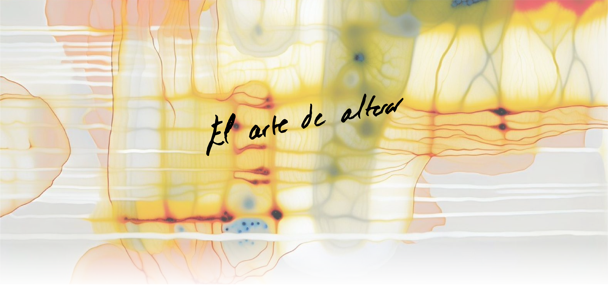
Exposición actual
15 / 06 – 15 / 07
Kai Salem
SALAR transforma materiales orgánicos en una colección de piezas donde la memoria del territorio aparece cristalizada, agrietada y suspendida en el tiempo. La exposición explora la relación entre conservación, desgaste y ritual a través de instalaciones matéricas construidas con residuos alimentarios procesados e intervenidas mediante procesos de evaporación, oxidación y cristalización.
Entre referencias al paisaje asturiano, la artesanía tradicional y la estética contemporánea, SALAR plantea una pregunta constante:
¿qué merece ser conservado?
Acceso incluido para comensales durante el servicio
Reservar visita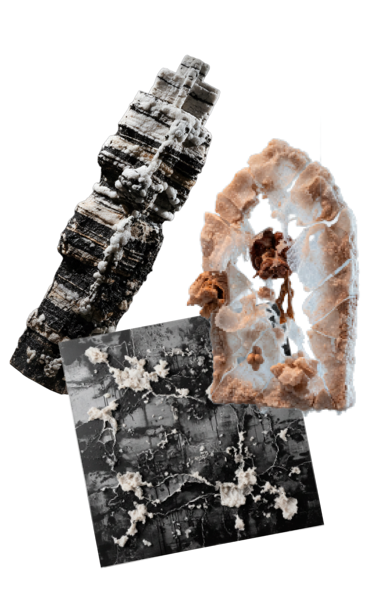
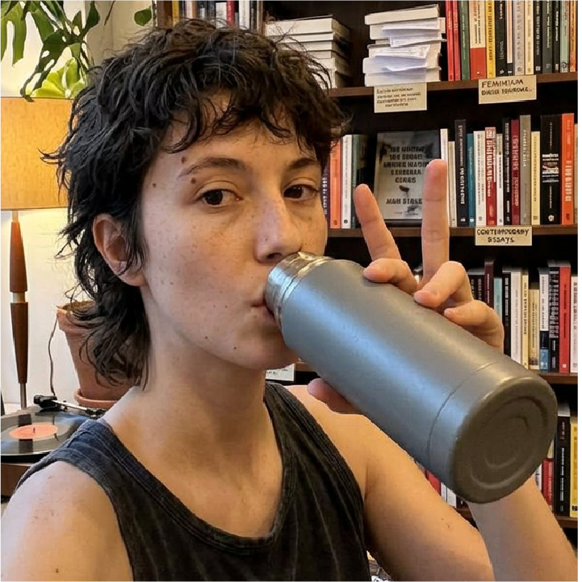
El artista
Kai Salem trabaja en la intersección entre la materia orgánica y el gesto pictórico. Su práctica parte del residuo como punto de origen: lo que se desecha en la cocina se convierte en pigmento, textura, forma.
Nacido en el País Vasco, formado entre Bilbao y Berlín, su obra ha sido expuesta en espacios de toda Europa. Nuberu es su primer trabajo en el que el material proviene exclusivamente de un único espacio gastronómico.
"La sal que sobra del plato no desaparece. Solo cambia de forma."
Próximamente
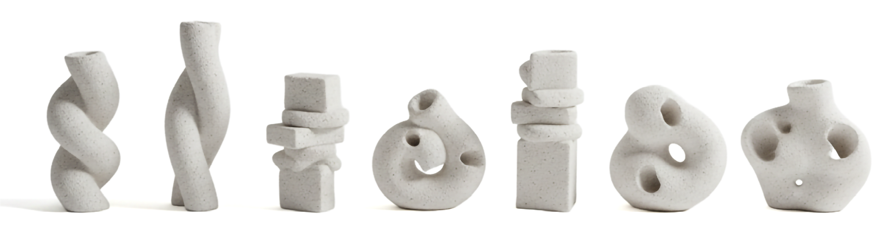
Nuberu trabaja con artistas locales que transforman los residuos del restaurante en obra. Cada temporada, nuevas colaboraciones.
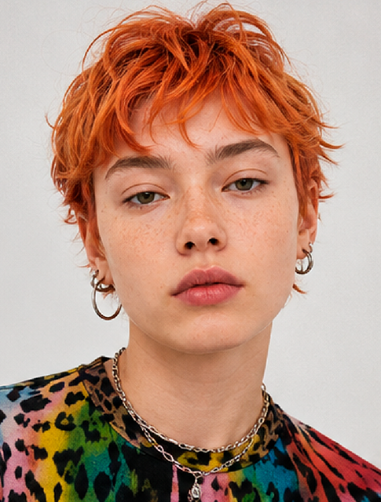
Lucía Fidalgo
Cerámica
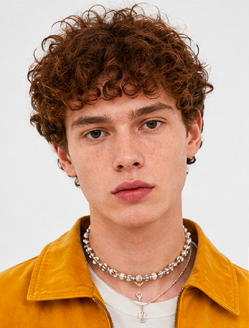
Martín Abad
Escultura
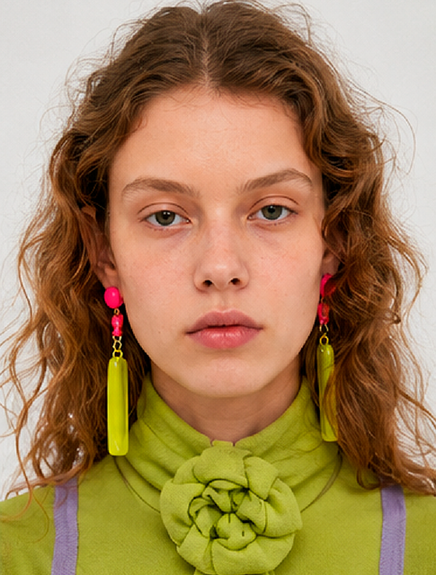
Vera Somoza
Pintura
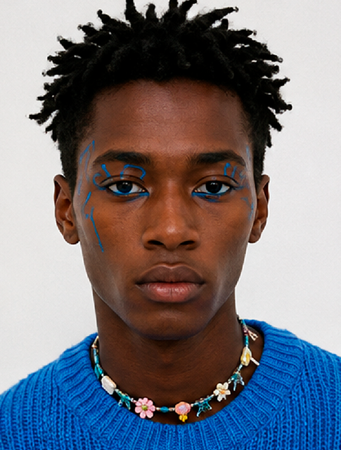
Iñaki Larrañaga
Fotografía
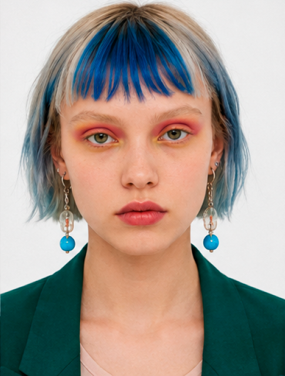
Amara Díez
Textil
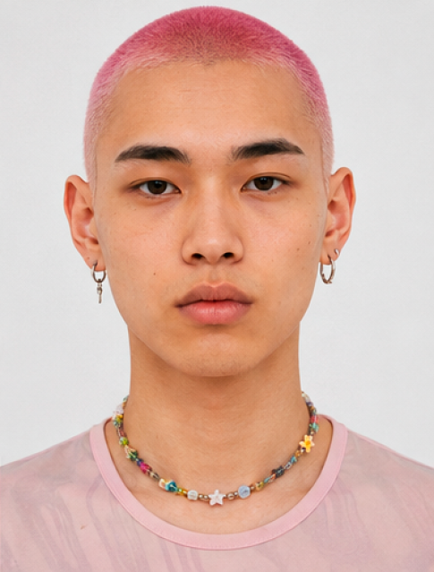
Sergio Pallás
Instalación
Programa de creación
Dos veces al año seleccionamos a un artista para una residencia de tres semanas. El artista trabaja en el restaurante, vive el ciclo de la cocina y crea obra a partir de los residuos de ese período.
La obra resultante se expone en la galería durante la temporada siguiente y el proceso queda documentado en una publicación de tirada limitada.
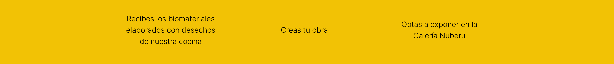
¿Cómo participar?
Escribe un correo a talento@nuberu.es
adjuntando tu nombre, portfolio y una breve carta de motivación